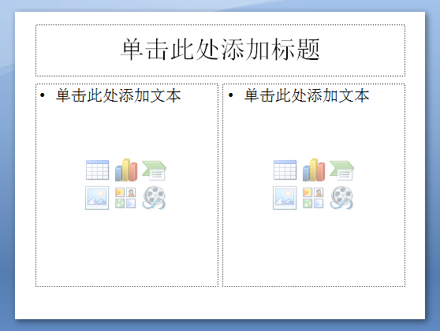
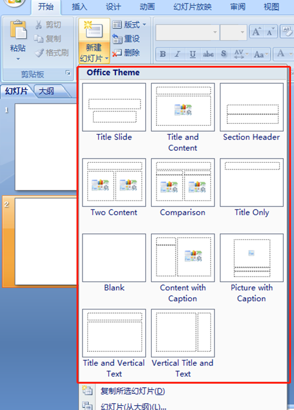
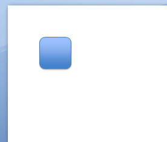
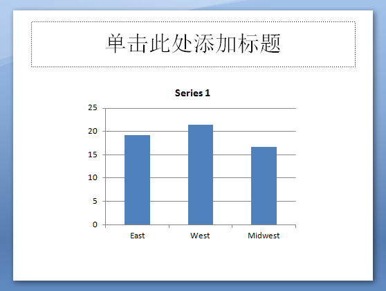

python-pptx允许您创建新的演示文稿以及对现有演示文稿进行更改。
实际上，它只允许您对现有演示文稿进行更改；只是，如果您从一个没有幻灯片的演示文稿开始，一开始感觉就像是从头开始创建一个幻灯片。
但是，演示文稿的外观很大程度上取决于删除所有幻灯片时剩下的部分，特别是主题、幻灯片母版和从母版派生的幻灯片布局。
让我们使用示例一步一步地介绍它，从一个演示文稿可以做的两件事开始，打开它并保存它。
打开空白演示文稿
最简单的入门方法是在不指定要打开的文件的情况下打开新的演示文稿：
1 from pptx import Presentation
2 prs = Presentation()
3 prs.save('test.pptx')
打开已有PPT
1 from pptx import Presentation
2 prs = Presentation('科创板交易规则解读.pptx') #PPT文件名
3 prs.save('new-file-name.pptx') #另外保存文件名
添加幻灯片
1 from pptx import Presentation
2 SLD_LAYOUT_TITLE_AND_CONTENT = 3
3 prs = Presentation()
4 slide_layout = prs.slide_layouts[SLD_LAYOUT_TITLE_AND_CONTENT]
5 slide = prs.slides.add_slide(slide_layout)
6 prs.save('new-file-name.pptx')
SLD_LAYOUT_TITLE_AND_CONTENT编号可以根据实际需求变更：

添加图形：
1 from pptx import Presentation
2 from pptx.enum.shapes import MSO_SHAPE
3 from pptx.util import Inches
4
5
6 SLD_LAYOUT_TITLE_AND_CONTENT = 6
7 prs = Presentation()
8 slide_layout = prs.slide_layouts[SLD_LAYOUT_TITLE_AND_CONTENT]
9 slide = prs.slides.add_slide(slide_layout)
10
11
12 shapes = slide.shapes
13 left = top = width = height = Inches(1.0)
14 shape = shapes.add_shape(MSO_SHAPE.ROUNDED_RECTANGLE, left, top, width, height)
15
16 prs.save('new.pptx')

插入图表
1 from pptx import Presentation
2 from pptx.chart.data import CategoryChartData
3 from pptx.enum.chart import XL_CHART_TYPE
4 from pptx.util import Inches
5
6 # create presentation with 1 slide ------
7 prs = Presentation()
8 slide = prs.slides.add_slide(prs.slide_layouts[5])
9
10 # define chart data ---------------------
11 chart_data = CategoryChartData()
12 chart_data.categories = ['East', 'West', 'Midwest']
13 chart_data.add_series('Series 1', (19.2, 21.4, 16.7))
14
15 # add chart to slide --------------------
16 x, y, cx, cy = Inches(2), Inches(2), Inches(6), Inches(4.5)
17 slide.shapes.add_chart(
18 XL_CHART_TYPE.COLUMN_CLUSTERED, x, y, cx, cy, chart_data)
19
20 prs.save('chart-01.pptx')